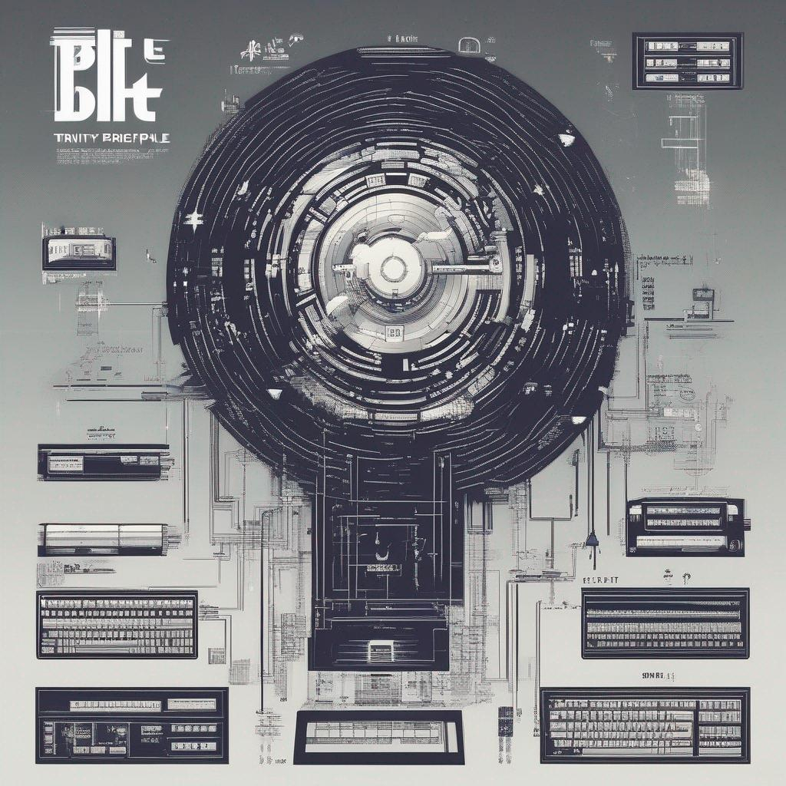

Hey there, aspiring game creators! 👋 Are you itching to dive into the game development world but staring at a blank canvas, unsure where to start?
Don't worry; you're not alone!
Coming up with fantastic game ideas can be a challenging but gratifying process.
Today, we will explore a powerful technique for generating awesome game ideas: the Trinity of Games and the BUT Principle!
These tools are perfect for newcomers to game development who want to craft unique and engaging gaming experiences.
The Trinity of Games
The Trinity of Games is a magical trio of elements that form the foundation of every game.
Understanding and manipulating these elements can help you come up with exciting game concepts:
-
Mechanics 🕹️: refer to the rules, systems, and interactions that make your game playable. Think of them as the nuts and bolts of your game. Examples include jumping in Super Mario, solving puzzles in Portal, or building structures in Minecraft.
Example: Imagine a game where players control a spaceship and must navigate through a maze of asteroids, avoiding collisions while collecting power-ups for their ship.
-
Aesthetics 🎨: encompass your game's visual, auditory, and sensory aspects. These elements shape the atmosphere and mood of your game. Examples include the dark, eerie atmosphere of Silent Hill or the colorful, whimsical world of Stardew Valley.
Example: Picture a game with a vibrant, neon-colored cyberpunk cityscape, accompanied by a pulsating electronic soundtrack, where players take on the role of a rogue hacker infiltrating a corporate stronghold.
-
Narrative 📖: involves your game's story, characters, and plot. It's the "why" behind what players are doing. Examples include the epic adventure of The Legend of Zelda or the emotional journey of The Last of Us.
Example: Consider a game set in a post-apocalyptic world where players must unite factions to rebuild society. Choices throughout the game affect the outcome, leading to multiple story branches.
The BUT Principle
Let's sprinkle creativity on the Trinity of Games with the BUT Principle. This principle encourages combining unexpected elements to create something fresh and exciting. Here's how it works:
- Start with an Idea 💡: Begin with a basic game idea. It could be something simple like a platformer, a racing game, or a puzzle game.
- Add a BUT 🍒: Now, add a twist or BUT to your idea. This is the unexpected element that sets your game apart. It could be a unique gameplay mechanic, a quirky art style, or an unconventional setting.
- Explore Possibilities 🌈: Once you've added the BUT, let your imagination run wild! This twist can impact your game's mechanics, aesthetics, and narrative. This is where the magic happens!
Example: You start with the idea of a platformer, BUT your character can only move by drawing paths on the screen. Suddenly, you have a game where players must use creativity to create pathways through challenging levels!
The BUT Principle in Released Games
Some real-world examples of games that successfully applied the BUT Principle to create unique and memorable experiences:
Portal
- Idea: A first-person puzzle game.
- BUT: the player has a portal gun that can create linked portals on surfaces, challenging traditional notions of space and physics.
- Result: The game became groundbreaking, blending mind-bending puzzles with a darkly humorous narrative.
Undertale
- Idea: A classic RPG with turn-based combat.
- BUT: the player can choose to spare or befriend enemies rather than defeat them, leading to a unique and non-violent approach to role-playing.
- Result: "Undertale" gained widespread acclaim for its innovative approach to storytelling and morality in gaming.
Minecraft
- Idea: An open-world sandbox game.
- BUT: the entire world is made up of blocks players can break and place, allowing limitless creativity and construction.
- Result: "Minecraft" became a global phenomenon, inspiring creativity and collaboration among players worldwide.
Braid
- Idea: A 2D platformer.
- BUT: time moves in reverse or slows down as the player desires, creating intricate puzzles and gameplay that challenge conventional platformers.
- Result: "Braid" received critical acclaim for its unique take on time-based gameplay and storytelling.
Potential drawbacks or limitations
- Overemphasis on Innovation: While striving for uniqueness is admirable, sometimes overly complex or unconventional ideas may alienate potential players. Striking a balance between innovation and familiarity is crucial.
- Scope and Feasibility: Innovative game concepts may require significant resources, time, and technical expertise. It's essential to assess whether your idea is realistically achievable within your team's capabilities and budget.
- Market Acceptance: Games with highly innovative concepts can be a gamble regarding market acceptance. Players may gravitate towards more familiar experiences, making finding an audience for your unique game challenging.
- Balancing Mechanics, Aesthetics, and Narrative: Ensuring that your game's mechanics, aesthetics, and narrative align harmoniously can be challenging. An innovative twist might disrupt this balance, creating a disjointed player experience.
- Learning Curve: Unconventional mechanics or gameplay can create a steep learning curve for players. If not handled carefully, this can lead to frustration and player drop-off.
- Marketing and Communication: Communicating the unique aspects of your game to potential players can be challenging. Players may need more time to grasp the innovation, making marketing and promotion more difficult.
- Risk of Failure: Experimentation can lead to failure, and not all innovative ideas will result in successful games. There's a risk of investing time and resources in a concept that doesn't resonate with players.
- Target Audience: Some innovative ideas may appeal to niche audiences, limiting your game's potential player base. It's essential to understand who your target audience is and whether your concept aligns with their preferences.
- Resource Constraints: Small indie teams or solo developers may need more resources to implement innovative ideas. Scaling down or simplifying the concept might be necessary.
- Trend Dependence: Innovative ideas can be influenced by current gaming trends. While this can lead to success in the short term, it may result in a game that quickly becomes dated.
- Playtesting and Iteration: Testing innovative mechanics or concepts may require more extensive playtesting and iteration to refine and balance the gameplay. This can be time-consuming.
Incorporating these considerations into your creative process will help you navigate the potential drawbacks and limitations of using the Trinity of Games and the BUT Principle effectively. Strive for innovation, but always keep the practical aspects of game development in mind to increase the chances of success.
Putting It All Together
Let's combine the Trinity of Games and the BUT Principle to create a unique game concept:
- Mechanics: Players control a quirky robot with the ability to manipulate gravity. The robot can walk on walls and ceilings, opening up a whole new dimension of gameplay.
- Aesthetics: Set in a surreal, steampunk-inspired world filled with floating islands and mechanical creatures. The visual style is a fusion of Victorian elegance and whimsical machinery.
- Narrative: The robot embarks on a quest to save a floating city from a mysterious threat, uncovering the secrets of its own creation along the way.
- BUT: It's a 2D side-scrolling game, BUT players manipulate gravity..
And there you have it! By combining the Trinity of Games with the BUT Principle, you can cook up some genuinely extraordinary game ideas that are sure to grab the attention of players and fellow game developers alike.
So, grab your favorite game design tools and experiment with these concepts. Who knows? Your next game idea is the next big hit! 🚀🎮😃
If you enjoy the ride, please consider buying me a coffee.